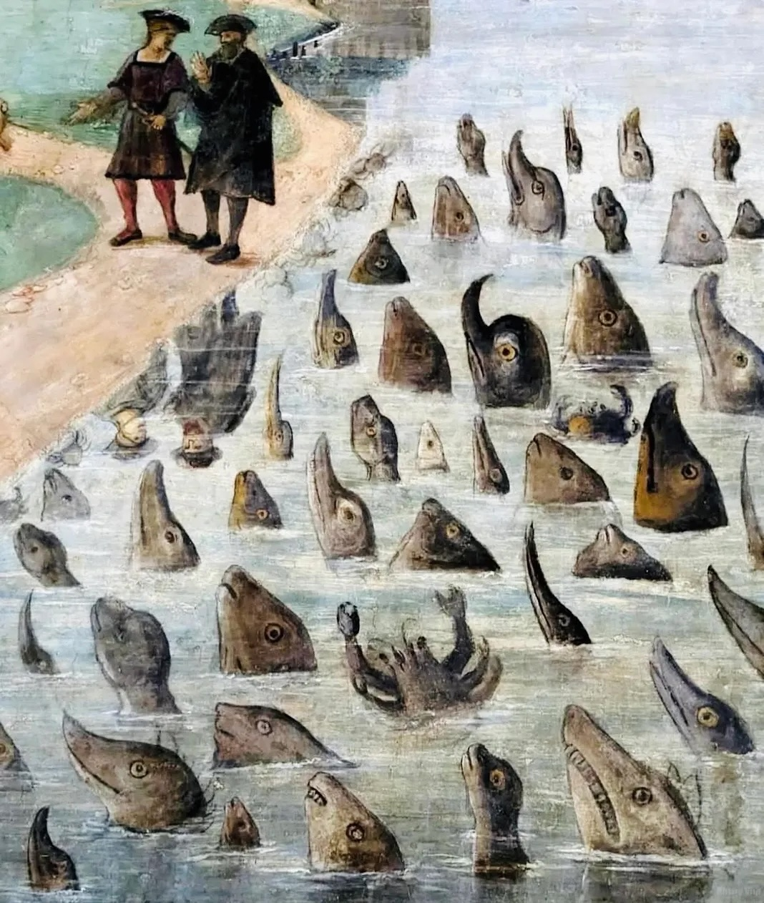

2026-05 | Transmissions
The past few months have been slow going -- it turns out it's not trivial to move
continents with a baby and still try to work in fundamental research. So
it seems this noteset is on the backburner while I am occupied with other things.
Small transmissions: Pushkin, the neighbour's glorious gray cat, who could lead a masterclass in lounging,
sometimes accepts pets now. My child's favourite fruit switched from bananas to mandarins.
We rode our bikes to the sea and discovered that none of us really like dressed crab.
(Dressed crab is a local specialty and in theory quite a sustainable way to get protein,
but it turns out that a dead bottom-dwelling sea creature's shell stuffed with
teared-up bits of that same creature
is a bit of an acquired taste.) The garden is overflowing with greenery,
mostly weeds, but some of the things I've planted are growing. (Potatoes continue to be a leitmotif, obvi.)
I gave a lecture at Masarykova Univerzita about oceanography, which
felt awkward, as most online lectures do:
speaking to a camera with no feedback in a language I don't work in.
I was therefore pleasantly shocked to find out later via Google Spreadsheet
that the students on the whole really liked it.
Bilingual slides
here, feat. the obligatory
seals with GPS hats, but also the time Henry Stommel deduced the Gulf Stream just by thinking about it.
some fun things:
I loved
this documentary about extreme birdwatching.
It's very technically well made, part road movie, part sociological sonde, part just beautiful shots of birds.
Deeply American, in a good way. I also appreciate that the whole thing is free on YouTube:
Audubon: Tell me about why you decided to release Listers for free on YouTube. Did you try to distribute it in a more traditional way, or do you have plans to?
Owen: From the get-go, we were always gonna put it on YouTube. In the last like, three weeks, I’ve talked to a bunch of fancy executive producers, and they’re like, “We could get it on Netflix or HBO.” And then you look more into it, and you see it’s just a slimy business. We decided to keep it on YouTube for free. I like the idea that a homeless guy can walk into a library somewhere and watch it, you know? And people have been donating money if they like it, like that value-for-value model, and I like that better than some rich guy in Hollywood taking 65 percent of the sale to HBO, and they have no connection to nature.
Quentin: He didn’t spend a single night at a Cracker Barrel.
Owen: Yeah, he’s never even been camping in his life. He’s never shat outside. He doesn’t care about the birds.
I really like the French synths of EYE,
which for a while accompanied me on my morning runs. Laurène Exposito is not particularly well known or
documented on the internet, but she has been doing her small beautiful things for a long time now, music projects,
a tiny indie label, there for whoever wants. For a number of reasons,
these months I'm finding it hard to connect to the world, which is not a particularly sense-making way to live.
I'm not sure why, but hearing this song from the periphery reminded me that there are things to connect to,
that there will be a way back, that there is a path forward even when you can't see it.
I like this detail of a mural of the Basilica di Sant’Antonio in Padua in which Saint Anthony
preaches to the seamonsters, who seem rather nonplussed by the whole thing.
